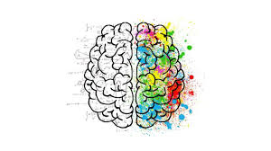

Kitap Okumanın Faydası
Kitap okumanın birçok yararı vardır. Biz sadece 4 tanesini ele alacağız.
1. Zihni Uyarır
Egzersizler nasıl vücudumuzu güçlendirirse, okumak da zihnimizi güçlendirir.
Araştırmalar, düzenli olarak kitap okuyan insanların Alzheimer vb. hastalıkların ilerlemesini yavaşlatabileceğini göstermiştir.
2. Stresi Azaltır

İyi bir kitap, uzun bir günün sonunda gevşemek için mükemmel bir yol olabilir. Zihninizi iş ve hayatın stresinden uzaklaştırabilir ve sizi tamamen başka bir dünyaya taşıyabilir.
Hikayenin içinde kayboldukça, zihniniz rahatlar ve ona yük olan olumsuz düşünceler serbest bırakılır.
3. Bilgi Birikiminizi Artırır
Kitap okumanın bir diğer faydası da bilgi birikiminizi artırmaya yardımcı olabilmesidir. Bunun nedeni, kitapların tarih, bilim ve sanat dahil olmak üzere çok çeşitli konularda bilgi sağlamasıdır.
Farklı konular hakkında okudukça, yavaş yavaş bilgi tabanınızı oluşturmaya başlayacaksınız. Ayrıca, kitap okumak karmaşık kavramları daha iyi anlamanıza da yardımcı olabilir.
4. Odaklanma ve Konsantrasyonu Geliştirir.
İnternet çılgınlığı dünyamızda, her gün birden fazla görevi yerine getirirken dikkatler aynı anda milyonlarca farklı yöne çekiliyor.
Bunu en iyi düzenleyebilme yollarından birisi de düzenli kitap okumaktır.
Okuduğunuzda, beyninizi uzur bir bilgi akışına dikkat etmesi ve gelişen bir hikayeyi takip etmesi için sürekli olarak eğitirsiniz. Odak noktasındaki bu alıştırma, bu becerileri hayatınızın diğer alanlarına aktarmanıza yardımcı olabilir.
Kişisel Kitap Tavsiyelerim
Doğan Cüceloğlu - Savaşçı
Cervantes - Don Kişot
Sinan Canan - İFA
İlber Ortaylı - Yakın Tarih Gerçekleri
Kitap Okuma Alışkanlığı Kazanmanın Yolları
Alışkanlık edinme doğrultusunda okunacak ilk kitap okuyucuyu sıkmayacak kadar ince ve zevkine uygun olmalı.
Araştırmalara göre bir davranışın alışkanlık haline gelmesi 21 gündür. Günlük 15 dakika ile başlayıp ilerleyen zamanlarda yavaş yavaş süreyi arttırmak faydalı olacaktır.
Yanında her daim kitap bulundurmak, okumayı alışkanlık haline dönüştürmeye katkı sağlayacaktır. Böylece boş kalınan her anda okuma fırsatı yakalanmış olacaktır.